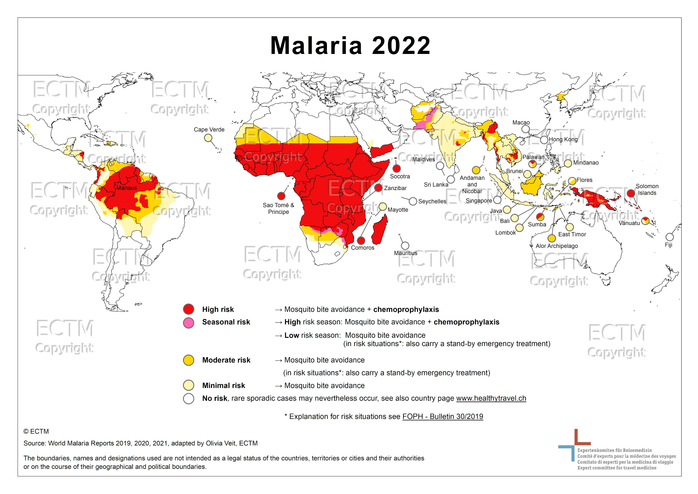
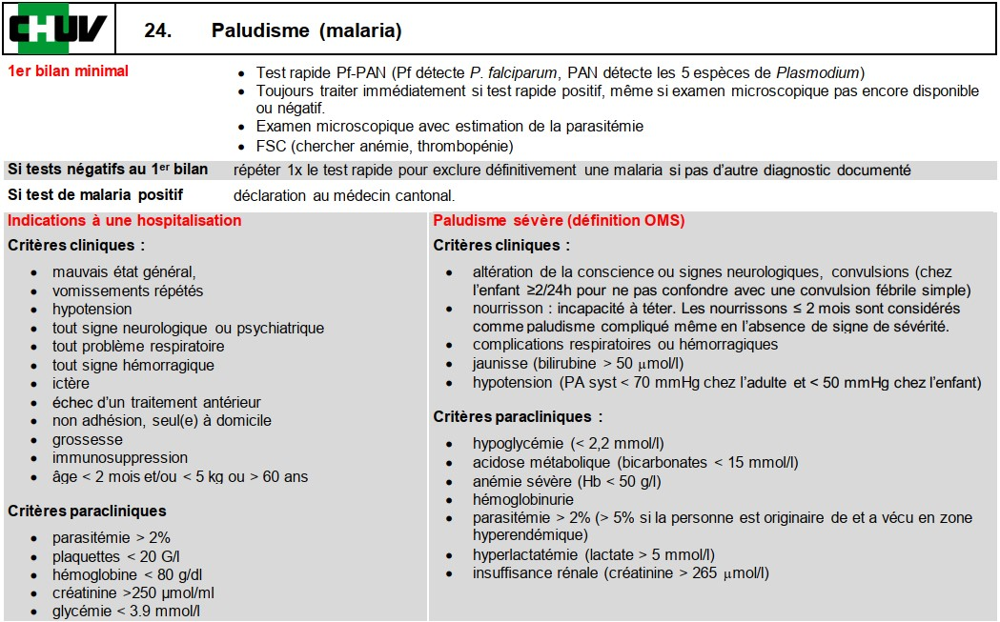
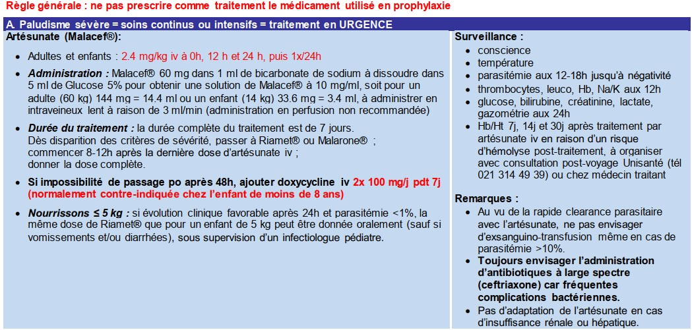
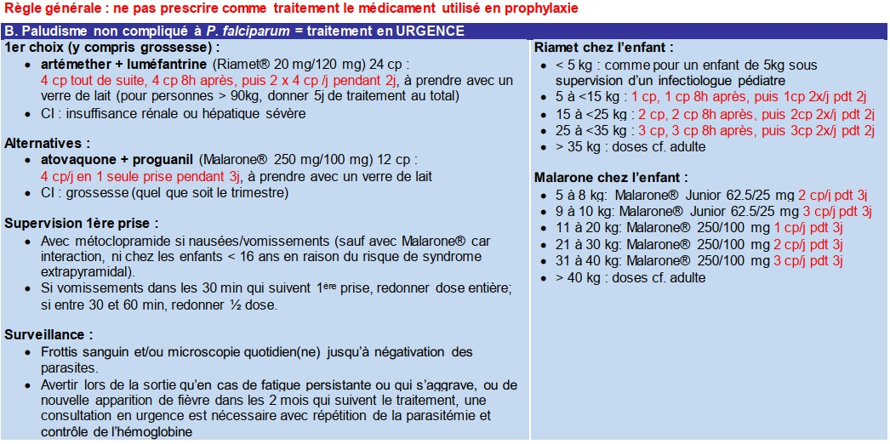
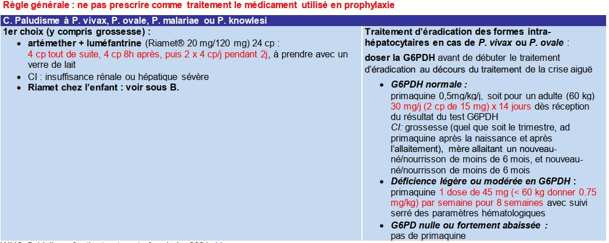

Malaria
Paludisme : repartition geographique, agents causaux, diagnostic, traitement et pieges pour le medecin de premier recours.
Repartition geographique
Afrique, Amerique centrale et du Sud, Asie, Oceanie. P. falciparum predomine en Afrique et P. vivax ailleurs.

Agent causal
Parasite protozoaire : Plasmodium falciparum / malariae / vivax / ovale / knowlesi
Transmission
Piqure du moustique anophele femelle piquant surtout la nuit, souvent apres minuit.
Incubation
- P. falciparum : min. 6 j, typiquement 12 – 14 j. Temps d'incubation souvent prolonge lors de prise de prophylaxie anti-malarique
- P. vivax et P. ovale : typiquement env. 14j, rechutes jusqu'a 2-3 ans apres infection initiale
- P. malariae : tres variable, jusqu'a plusieurs annees
Presentation clinique
Symptomes souvent peu specifiques : EF, frissons, tachycardie, tachypnee, malaise, fatigue, diaphorese, cephalees, toux, anorexie, nausees, vomissements, douleurs abdominales, diarrhees, arthralgies, myalgies.
Malaria compliquee : alteration etat de conscience +/- crises convulsives, detresse respiratoire ou ARDS, insuffisance renale, collapsus circulatoire.
⚠ Piege
Jusqu'a 1/3 des patients avec malaria ne presentent pas de fievre lorsqu'ils consultent.
Examen clinique
Splenomegalie, ictere modere (si malaria severe : paleur, ictere, petechies).
Labo
- Thrombopenie, perturbation des tests hepatiques (bilirubine), elevation de la creatinine
- En cas de malaria severe : perturbation plus importante de ces parametres, anemie, hypoglycemie, acidose metabolique
Diagnostic

Traitement



Images tirees du guide d'antibiotherapie du CHUV
Quand referer ?
Toute suspicion de malaria severe (alteration de conscience, detresse respiratoire, insuffisance renale, hyperparasitemie ≥2%) necessite un avis specialise.